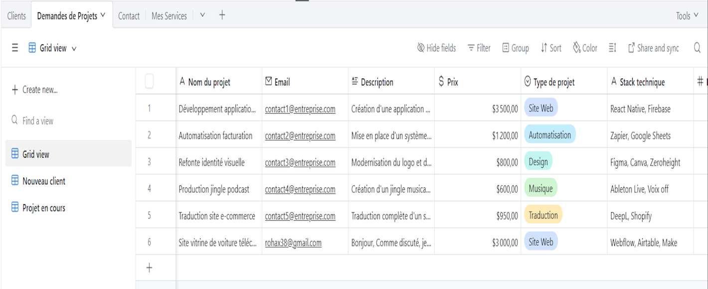
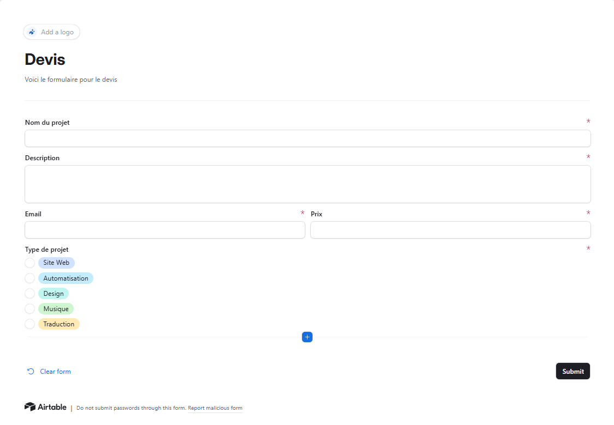
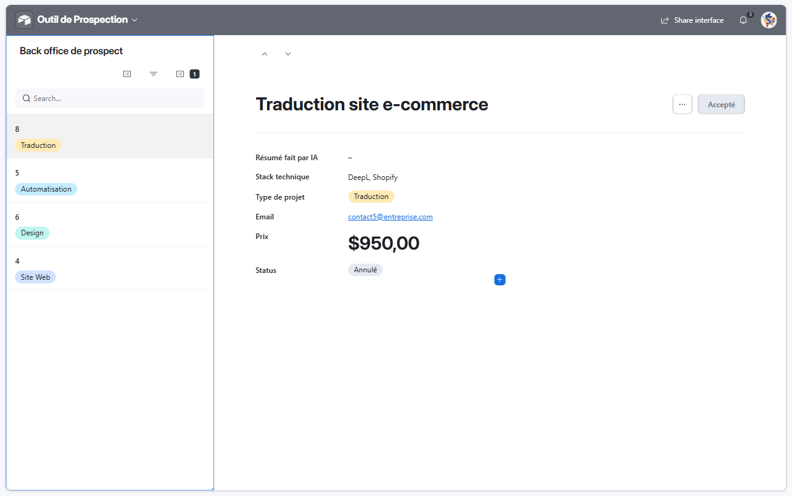
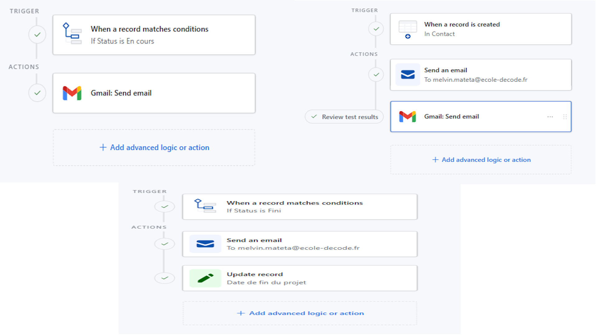
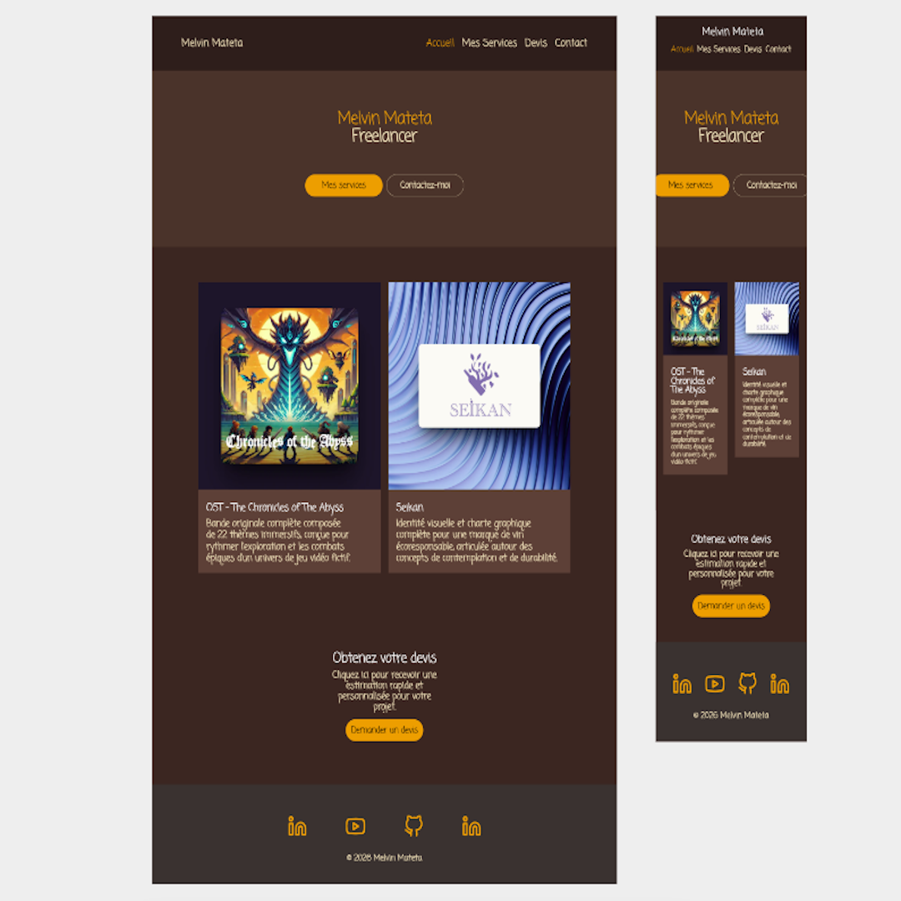
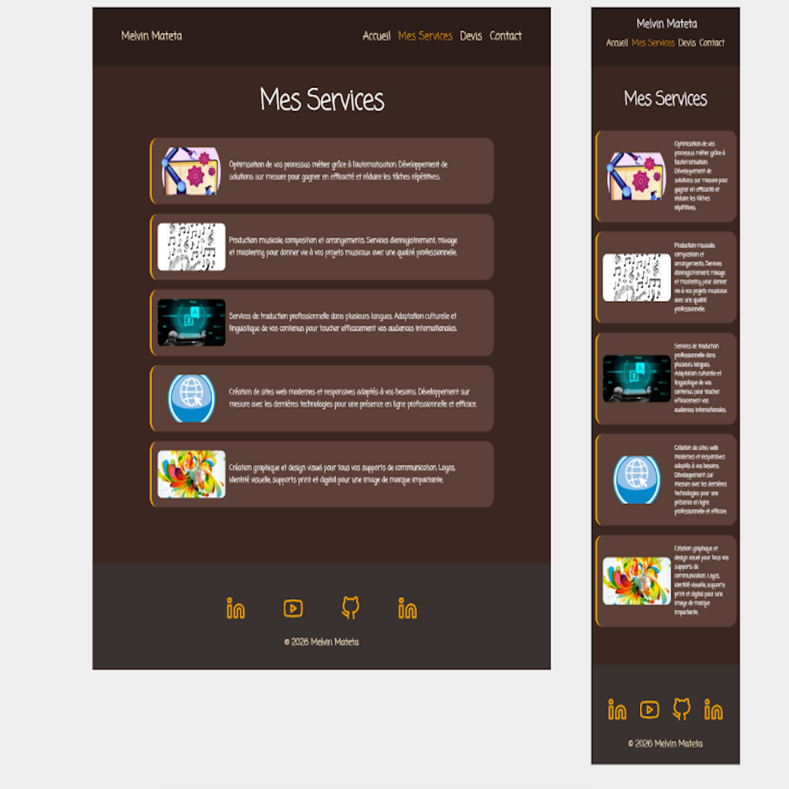
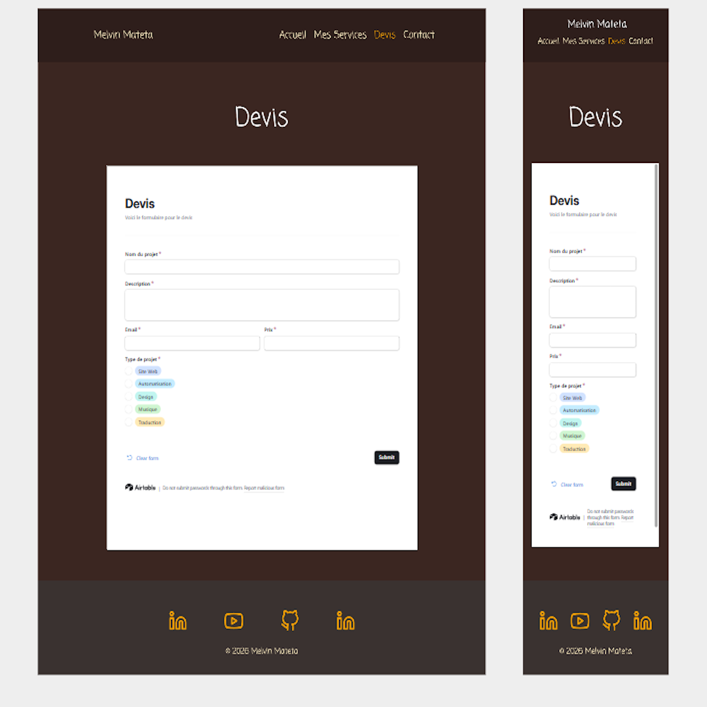
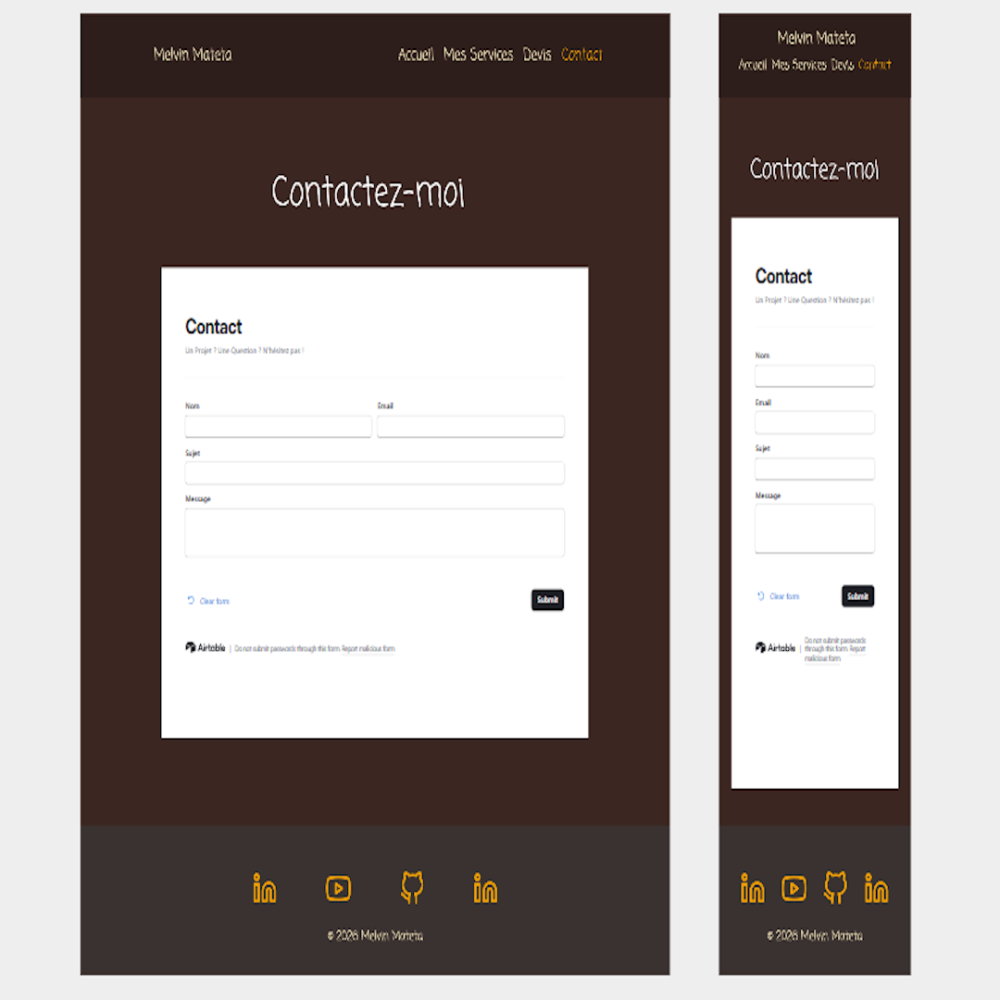

Outil de Prospection
Compétences
Framer, Airtable, Zapier
Equipe
Melvin Mateta
Date
Février 2026
Description
J'ai développé un écosystème d'automatisation Full-Stack No-Code pour la gestion de mes projets freelance. L'objectif était de supprimer totalement la phase administrative manuelle du démarrage de projet. Ce système relie un site vitrine dynamique (Framer) à un CRM sur-mesure (Airtable), le tout orchestré par des workflows intelligents (Zapier) intégrant de l'Intelligence Artificielle générative.

Base de données Airtable
Le socle de ce projet repose sur une base centralisée. L'information est structurée autour de trois tables principales : "Mes Services" qui agit comme un CMS dynamique pour le site web, "Demandes de Projets" qui recueille les gros devis, et "Contact" pour gérer les requêtes simples et assurer le suivi de mes candidatures grâce à un système de relance automatisé.
Formulaires intégrés
Pour alimenter la base de données sans friction, j'ai conçu des formulaires Airtable optimisés. Ils permettent de qualifier précisément le besoin du prospect (design, web, musique) avant même le premier contact. Ces formulaires sont le point d'entrée qui déclenche toute la machinerie d'automatisation en arrière-plan.


Interface Back-office
Afin de piloter mon activité de freelance efficacement, j'ai mis en place une interface personnalisée sur Airtable. Ce tableau de bord me permet de visualiser d'un coup d'œil l'état d'avancement de chaque projet et d'exploiter pleinement mon CRM personnel, sans me perdre dans des lignes de tableur.
Automatisations des status
En complément de Zapier, j'ai configuré des automatisations natives directement dans Airtable pour gérer la communication et le cycle de vie des projets. Le système est réactif aux changements : la création d'un nouveau contact déclenche des notifications automatiques. De même, le passage d'un projet au statut "En cours" génère un email de suivi, et lorsqu'il passe en "Fini", le système envoie une alerte de fin de mission tout en horodatant automatiquement la date de clôture dans la base de données


Analyse des demandes via Zapier
Dès l'arrivée d'une nouvelle demande de projet dans Airtable, ce premier Zap s'active. Une Intelligence Artificielle (AI by Zapier) analyse d'abord le contenu de la requête, suivie d'un module "Formatter" pour structurer les données chiffrées (comme le budget). Ensuite, le flux utilise la logique "Paths" pour se séparer en deux scénarios possibles. Selon le cas, le système prépare automatiquement un brouillon d'e-mail de réponse dans Gmail et met à jour le statut du client dans Airtable.
Génération de projet par l'IA
Ce second Zap est dédié à la préparation opérationnelle. Lorsqu'une ligne est mise à jour, le workflow catégorise le projet en trois chemins distincts : Site Web, Musique ou Design. En fonction de la catégorie, une IA est invoquée pour générer un contenu spécifique au domaine (pré-cahier des charges, pistes créatives, etc.). Enfin, ce texte brut est automatiquement converti en fichier et sauvegardé dans le bon dossier sur mon Google Drive, me fournissant une base de travail immédiate.


Page d'accueil (Framer)
La page "Devis" est le point d'entrée principal pour les nouveaux projets. Pour relier le frontend à mon backend de manière fluide, j'ai utilisé le composant "Embed" de Framer afin d'y intégrer directement le grand formulaire généré sur Airtable. Grâce à cette intégration transparente, le visiteur reste immergé dans l'univers visuel du site, tandis que ses réponses partent instantanément dans ma base de données pour déclencher toute la chaîne d'automatisation Zapier et l'IA.
Page Mes Services (CMS)
Sur le même principe technique, la page de contact a été pensée pour les requêtes plus simples et rapides. J'y ai intégré (toujours via Embed) le second formulaire Airtable, spécifiquement relié à ma table "Contact". Cette méthode m'évite de devoir gérer un backend complexe sur le site : chaque message posté depuis Framer arrive directement, et de manière parfaitement structurée, dans mon CRM personnel.


Page Devis
Conçue pour maximiser l'acquisition de leads, la page Devis intègre de manière transparente le formulaire Airtable principal (Embed). Le client reste immergé dans l'univers graphique du site tout en fournissant les données structurées nécessaires pour déclencher toute la chaîne d'automatisation Zapier et l'IA.
Page Contact
Pour les requêtes simples ou les échanges rapides, une page de contact épurée a été mise en place. Elle intègre un second formulaire, directement relié à la table de suivi de mon CRM pour assurer une gestion de la clientèle réactive, sans déclencher la machinerie lourde de la création de projet.
